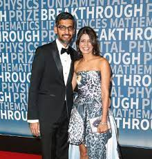

É o atual CEO da Google, a sua fortuna é estimada em torno de 600 milhões de doláres,Além disso, ele é um Indiano e nasceu em 1972,como também,aos 21 anos se formou em Engenharia Metarlúgica no Instituito Indiano de Tecnologia Kharagpur, após esta conquista, Sundar ganhou uma bolsa de estudo na Universidade de Stranford, lá obteve título de mestre da Engenharia e Ciências Materiais, em 2004 ele foi trabalhar na Google...
Ele virou CEO da Google e Alphabet em 2015,substituindo a Larry Page,outra curiosidade é que ele sempre gostou de tecnologia,como afirma na entrevista ao jornal New York Times"Quando eu estava no ITT, eu raramente tinha acesso ao computador, talvez três ou quatro vezes ", por outro lado,Pichai Sundararajan (nome verdadeiro dele) foi responsável por liderar a criação do navegador Google Chorme em 2008.
Sundar possui dois filhos com Anjali Pichai,como também é fã de futebol.